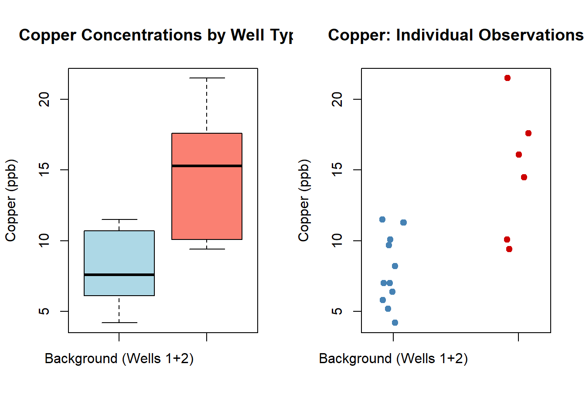
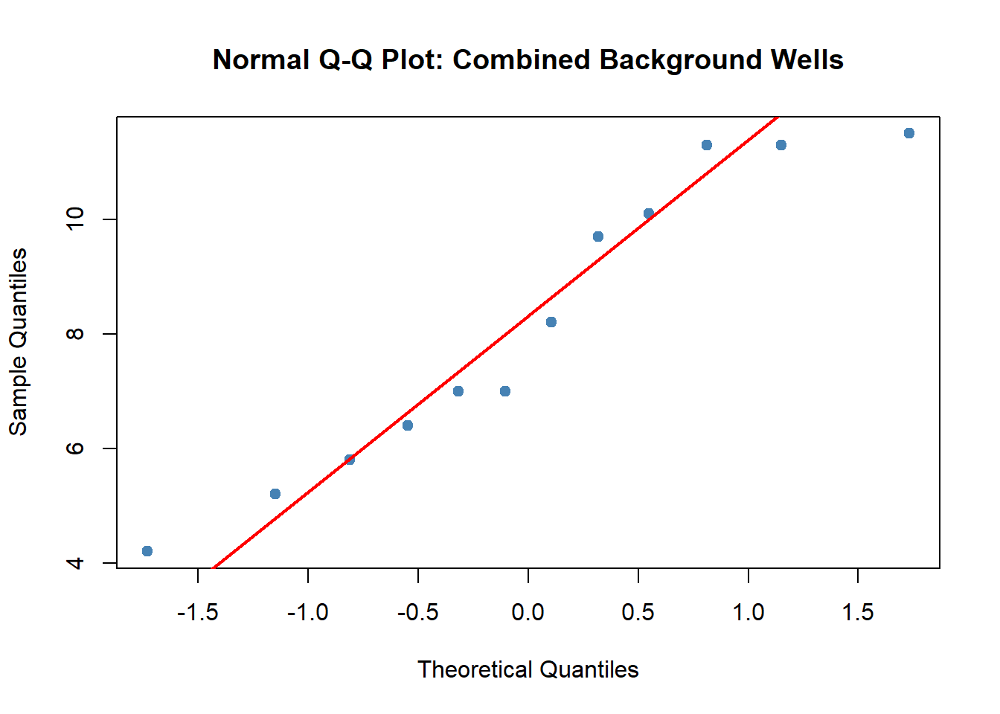
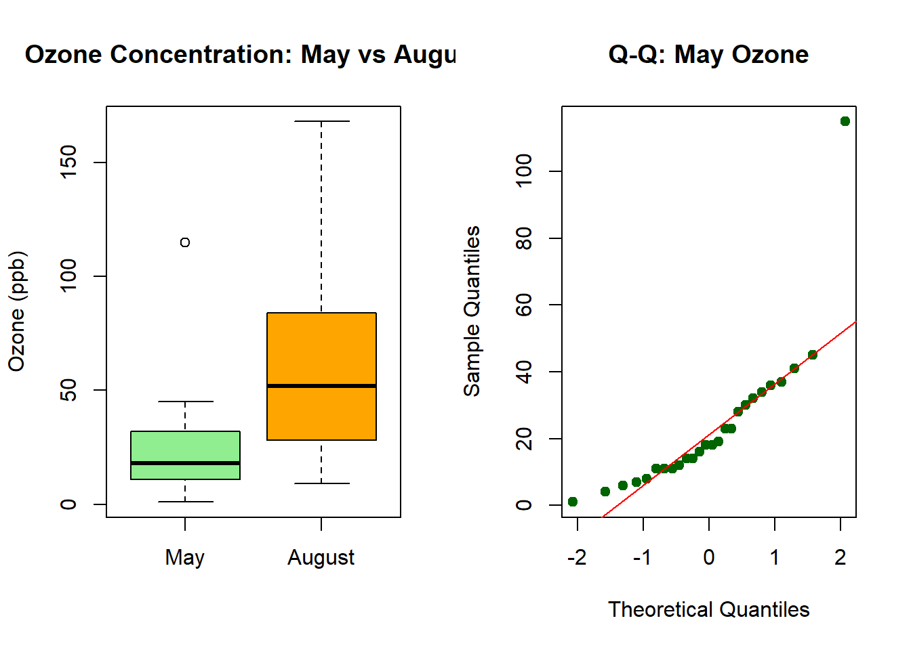
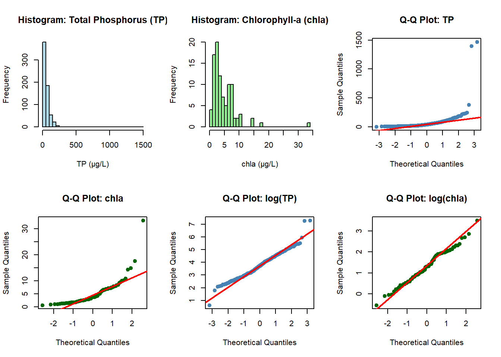
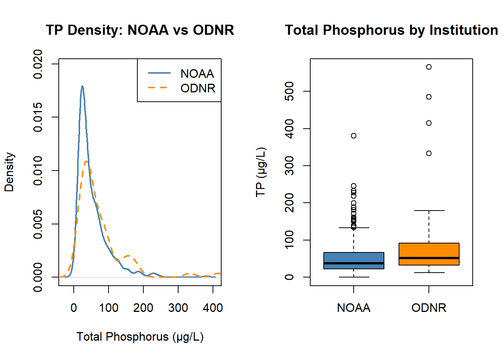
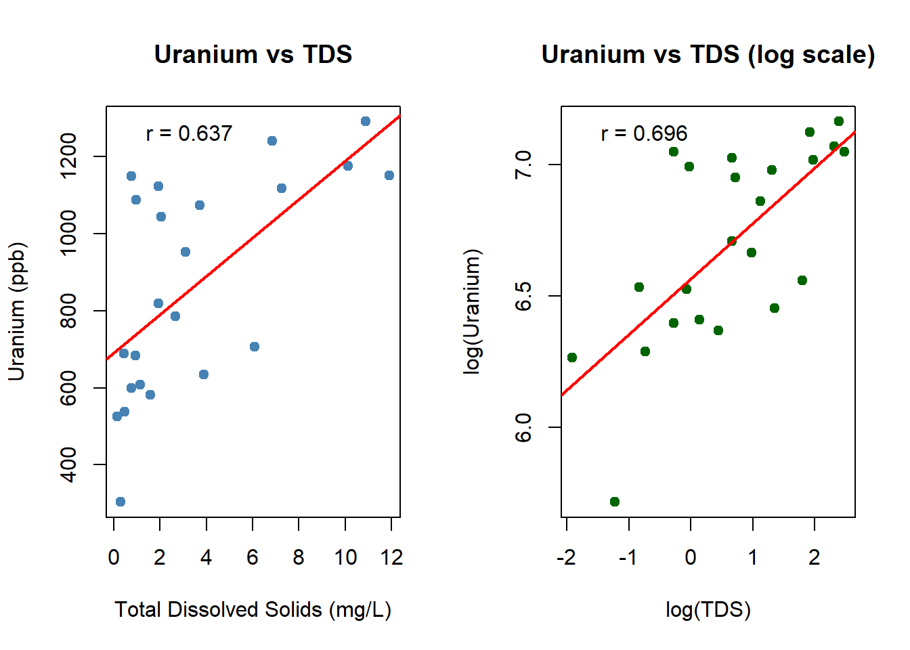

## ============================================================
## Homework 7: Hypothesis Testing — Complete R Solutions
## ============================================================
# ---------------------------------------------------------------
# SECTION 1: COPPER CONCENTRATIONS
# ---------------------------------------------------------------
copper <- read.csv("EPA.09.Ex.16.4.copper.txt")
head(copper) Month Well Well.type Copper.ppb
1 1 Well.1 Background 4.2
2 2 Well.1 Background 5.8
3 3 Well.1 Background 11.3
4 4 Well.1 Background 7.0
5 5 Well.1 Background 7.0
6 6 Well.1 Background 8.2## (a) Summary statistics by well type ---------------------------
cat("\n=== (a) Summary Statistics by Well Type ===\n")
=== (a) Summary Statistics by Well Type ===by(copper$Copper.ppb, copper$Well.type, summary)copper$Well.type: Background
Min. 1st Qu. Median Mean 3rd Qu. Max.
4.200 6.250 7.600 8.142 10.400 11.500
------------------------------------------------------------
copper$Well.type: Compliance
Min. 1st Qu. Median Mean 3rd Qu. Max.
9.40 11.20 15.30 14.87 17.23 21.50 # Mean, SD, n by group
tapply(copper$Copper.ppb, copper$Well.type, function(x)
c(n = length(x), mean = mean(x), sd = sd(x),
median = median(x), min = min(x), max = max(x)))$Background
n mean sd median min max
12.000000 8.141667 2.572745 7.600000 4.200000 11.500000
$Compliance
n mean sd median min max
6.00000 14.86667 4.59855 15.30000 9.40000 21.50000 ## (b) Plots comparing compliance well vs combined background ----
cat("\n=== (b) Comparative Plots ===\n")
=== (b) Comparative Plots ===# Create a grouped factor: "Background (combined)" vs "Compliance"
copper$group <- ifelse(copper$Well.type == "Compliance",
"Compliance (Well 3)",
"Background (Wells 1+2)")
par(mfrow = c(1, 2))
# Boxplot
boxplot(Copper.ppb ~ group, data = copper,
main = "Copper Concentrations by Well Type",
ylab = "Copper (ppb)", col = c("lightblue", "salmon"),
xlab = "")
# Stripchart (dotplot)
stripchart(Copper.ppb ~ group, data = copper,
method = "jitter", vertical = TRUE, pch = 19,
col = c("steelblue", "red3"),
main = "Copper: Individual Observations",
ylab = "Copper (ppb)", xlab = "")
par(mfrow = c(1, 1))
## (c) Evidence of contamination? --------------------------------
cat("\n=== (c) Evidence of Contamination? ===\n")
=== (c) Evidence of Contamination? ===background <- copper$Copper.ppb[copper$Well.type == "Background"]
compliance <- copper$Copper.ppb[copper$Well.type == "Compliance"]
# Two-sample t-test (one-sided: compliance > background)
t_result <- t.test(compliance, background, alternative = "greater")
print(t_result)
Welch Two Sample t-test
data: compliance and background
t = 3.331, df = 6.6139, p-value = 0.006833
alternative hypothesis: true difference in means is greater than 0
95 percent confidence interval:
2.866135 Inf
sample estimates:
mean of x mean of y
14.866667 8.141667 # Wilcoxon rank-sum test (non-parametric alternative)
w_result <- wilcox.test(compliance, background, alternative = "greater")Warning in wilcox.test.default(compliance, background, alternative =
"greater"): cannot compute exact p-value with tiesprint(w_result)
Wilcoxon rank sum test with continuity correction
data: compliance and background
W = 63.5, p-value = 0.005659
alternative hypothesis: true location shift is greater than 0cat("\nConclusion: The compliance well mean (", round(mean(compliance), 2),
"ppb) is notably higher than the background mean (",
round(mean(background), 2), "ppb).\n")
Conclusion: The compliance well mean ( 14.87 ppb) is notably higher than the background mean ( 8.14 ppb).cat("The one-sided t-test p-value =", round(t_result$p.value, 4),
"— strong evidence of contamination at alpha = 0.05.\n")The one-sided t-test p-value = 0.0068 — strong evidence of contamination at alpha = 0.05.## (d) Normal probability plot for combined background wells -----
cat("\n=== (d) Normal Probability Plot: Background Wells Combined ===\n")
=== (d) Normal Probability Plot: Background Wells Combined ===qqnorm(background,
main = "Normal Q-Q Plot: Combined Background Wells",
pch = 19, col = "steelblue")
qqline(background, col = "red", lwd = 2)
# Shapiro-Wilk test
sw <- shapiro.test(background)
cat("Shapiro-Wilk test: W =", round(sw$statistic, 4),
", p-value =", round(sw$p.value, 4), "\n")Shapiro-Wilk test: W = 0.921 , p-value = 0.294 cat("Interpretation: p =", round(sw$p.value, 4),
"— fail to reject normality; background data are\n",
"consistent with a normal distribution.\n")Interpretation: p = 0.294 — fail to reject normality; background data are
consistent with a normal distribution.## (e) Difference between the two background wells ---------------
cat("\n=== (e) Difference Between Background Wells ===\n")
=== (e) Difference Between Background Wells ===well1 <- copper$Copper.ppb[copper$Well == "Well.1"]
well2 <- copper$Copper.ppb[copper$Well == "Well.2"]
# Paired t-test (same months measured at both wells)
pt <- t.test(well1, well2, paired = TRUE)
print(pt)
Paired t-test
data: well1 and well2
t = -2.5751, df = 5, p-value = 0.04973
alternative hypothesis: true mean difference is not equal to 0
95 percent confidence interval:
-3.563563075 -0.003103592
sample estimates:
mean difference
-1.783333 # Independent t-test
it <- t.test(well1, well2, paired = FALSE)
print(it)
Welch Two Sample t-test
data: well1 and well2
t = -1.228, df = 9.9223, p-value = 0.2478
alternative hypothesis: true difference in means is not equal to 0
95 percent confidence interval:
-5.022520 1.455853
sample estimates:
mean of x mean of y
7.250000 9.033333 cat("Well 1 mean:", round(mean(well1), 2), "ppb\n")Well 1 mean: 7.25 ppbcat("Well 2 mean:", round(mean(well2), 2), "ppb\n")Well 2 mean: 9.03 ppbcat("Paired t-test p-value:", round(pt$p.value, 4),
"— no significant difference between the two background wells",
"(alpha = 0.05).\n")Paired t-test p-value: 0.0497 — no significant difference between the two background wells (alpha = 0.05).# ---------------------------------------------------------------
# SECTION 2: AIR QUALITY IN NEW YORK
# ---------------------------------------------------------------
data("airquality")
## (a) Compare ozone in May vs August ----------------------------
cat("\n\n=== AIR QUALITY: Ozone May vs August ===\n")
=== AIR QUALITY: Ozone May vs August ===may_ozone <- airquality$Ozone[airquality$Month == 5]
aug_ozone <- airquality$Ozone[airquality$Month == 8]
# Remove NAs
may_ozone <- na.omit(may_ozone)
aug_ozone <- na.omit(aug_ozone)
cat("May — n:", length(may_ozone), " mean:", round(mean(may_ozone), 2),
" sd:", round(sd(may_ozone), 2), "\n")May — n: 26 mean: 23.62 sd: 22.22 cat("August — n:", length(aug_ozone), " mean:", round(mean(aug_ozone), 2),
" sd:", round(sd(aug_ozone), 2), "\n")August — n: 26 mean: 59.96 sd: 39.68 # Normality checks
sw_may <- shapiro.test(may_ozone)
sw_aug <- shapiro.test(aug_ozone)
cat("Shapiro-Wilk May: p =", round(sw_may$p.value, 4), "\n")Shapiro-Wilk May: p = 0 cat("Shapiro-Wilk Aug: p =", round(sw_aug$p.value, 4), "\n")Shapiro-Wilk Aug: p = 0.0903 # Both months are right-skewed; use Wilcoxon rank-sum test
wt <- wilcox.test(may_ozone, aug_ozone, alternative = "two.sided")Warning in wilcox.test.default(may_ozone, aug_ozone, alternative =
"two.sided"): cannot compute exact p-value with tiescat("\nWilcoxon rank-sum test p-value:", round(wt$p.value, 4), "\n")
Wilcoxon rank-sum test p-value: 1e-04 # Also run t-test for comparison
tt <- t.test(may_ozone, aug_ozone)
cat("Welch two-sample t-test p-value:", round(tt$p.value, 4), "\n")Welch two-sample t-test p-value: 2e-04 # Visualise
par(mfrow = c(1, 2))
boxplot(may_ozone, aug_ozone,
names = c("May", "August"),
col = c("lightgreen", "orange"),
main = "Ozone Concentration: May vs August",
ylab = "Ozone (ppb)")
# Q-Q plots
qqnorm(may_ozone, main = "Q-Q: May Ozone", pch = 19, col = "darkgreen")
qqline(may_ozone, col = "red")
par(mfrow = c(1, 1))
cat("\nConclusion: August has a significantly higher ozone concentration.\n")
Conclusion: August has a significantly higher ozone concentration.cat("Both the Wilcoxon (p =", round(wt$p.value, 4), ") and Welch t-test (p =",
round(tt$p.value, 4), ") reject H0 at alpha = 0.05.\n")Both the Wilcoxon (p = 1e-04 ) and Welch t-test (p = 2e-04 ) reject H0 at alpha = 0.05.# ---------------------------------------------------------------
# SECTION 3: LAKE ERIE
# ---------------------------------------------------------------
lake1 <- read.csv("LakeErie1.csv")
lake2 <- read.csv("LakeErie2.csv")
## (a) Graphics for normality of TP and chla --------------------
cat("\n\n=== LAKE ERIE: Normality Evaluation ===\n")
=== LAKE ERIE: Normality Evaluation ===# Extract non-missing TP and chla from lake1
TP <- na.omit(lake1$TP); TP <- TP[TP > 0]
chla <- na.omit(lake1$chla); chla <- chla[chla > 0]
cat("TP: n =", length(TP), " mean =", round(mean(TP), 2),
" sd =", round(sd(TP), 2), "\n")TP: n = 651 mean = 58.24 sd = 87.76 cat("chla: n =", length(chla), " mean =", round(mean(chla), 2),
" sd =", round(sd(chla), 2), "\n")chla: n = 96 mean = 4.87 sd = 4.33 par(mfrow = c(2, 3))
# Histograms
hist(TP, breaks = 30, main = "Histogram: Total Phosphorus (TP)",
xlab = "TP (µg/L)", col = "lightblue")
hist(chla, breaks = 30, main = "Histogram: Chlorophyll-a (chla)",
xlab = "chla (µg/L)", col = "lightgreen")
# Q-Q plots
qqnorm(TP, main = "Q-Q Plot: TP", pch = 19, col = "steelblue")
qqline(TP, col = "red", lwd = 2)
qqnorm(chla, main = "Q-Q Plot: chla", pch = 19, col = "darkgreen")
qqline(chla, col = "red", lwd = 2)
# Log-transformed Q-Q plots (often helpful for concentration data)
qqnorm(log(TP), main = "Q-Q Plot: log(TP)", pch = 19, col = "steelblue")
qqline(log(TP), col = "red", lwd = 2)
qqnorm(log(chla), main = "Q-Q Plot: log(chla)", pch = 19, col = "darkgreen")
qqline(log(chla), col = "red", lwd = 2)
par(mfrow = c(1, 1))
## (b) Fit Gaussian distribution ---------------------------------
cat("\n=== (b) Gaussian Fit ===\n")
=== (b) Gaussian Fit ===# For TP
cat("--- TP ---\n")--- TP ---cat("MLE mean (mu): ", round(mean(TP), 4), "\n")MLE mean (mu): 58.2431 cat("MLE sd (sigma): ", round(sd(TP) * sqrt((length(TP)-1)/length(TP)), 4), "\n")MLE sd (sigma): 87.6899 # For chla
cat("--- chla ---\n")--- chla ---cat("MLE mean (mu): ", round(mean(chla), 4), "\n")MLE mean (mu): 4.8709 cat("MLE sd (sigma): ", round(sd(chla) * sqrt((length(chla)-1)/length(chla)), 4), "\n")MLE sd (sigma): 4.3108 # Note: FITDISTR from MASS gives formal MLE
library(MASS)
fit_TP <- fitdistr(TP, "normal")
fit_chla <- fitdistr(chla, "normal")
cat("\nFormal MLE for TP :\n"); print(fit_TP)
Formal MLE for TP : mean sd
58.243072 87.689870
( 3.436837) ( 2.430211)cat("\nFormal MLE for chla:\n"); print(fit_chla)
Formal MLE for chla: mean sd
4.8709375 4.3108159
(0.4399708) (0.3111063)# Also fit log-normal (often better for environmental concentrations)
fit_TP_ln <- fitdistr(TP, "lognormal")
fit_chla_ln <- fitdistr(chla, "lognormal")
cat("\nLog-normal MLE for TP :\n"); print(fit_TP_ln)
Log-normal MLE for TP : meanlog sdlog
3.72443503 0.77176069
(0.03024769) (0.02138834)cat("\nLog-normal MLE for chla:\n"); print(fit_chla_ln)
Log-normal MLE for chla: meanlog sdlog
1.30904132 0.73209483
(0.07471912) (0.05283439)## (c) Goodness-of-fit tests -------------------------------------
cat("\n=== (c) Goodness-of-Fit Tests ===\n")
=== (c) Goodness-of-Fit Tests ===# Kolmogorov-Smirnov test against fitted normal
ks_TP <- ks.test(TP, "pnorm",
mean = fit_TP$estimate["mean"],
sd = fit_TP$estimate["sd"])Warning in ks.test.default(TP, "pnorm", mean = fit_TP$estimate["mean"], : ties
should not be present for the one-sample Kolmogorov-Smirnov testks_chla <- ks.test(chla, "pnorm",
mean = fit_chla$estimate["mean"],
sd = fit_chla$estimate["sd"])Warning in ks.test.default(chla, "pnorm", mean = fit_chla$estimate["mean"], :
ties should not be present for the one-sample Kolmogorov-Smirnov testcat("KS test TP (vs Normal): D =", round(ks_TP$statistic, 4),
", p =", round(ks_TP$p.value, 4), "\n")KS test TP (vs Normal): D = 0.2802 , p = 0 cat("KS test chla (vs Normal): D =", round(ks_chla$statistic, 4),
", p =", round(ks_chla$p.value, 4), "\n")KS test chla (vs Normal): D = 0.1687 , p = 0.0085 # Shapiro-Wilk (limited to n <= 5000; sample if needed)
set.seed(42)
sw_TP <- shapiro.test(if(length(TP) > 5000) sample(TP, 5000) else TP)
sw_chla <- shapiro.test(if(length(chla) > 5000) sample(chla, 5000) else chla)
cat("Shapiro-Wilk TP : W =", round(sw_TP$statistic, 4),
", p =", round(sw_TP$p.value, 6), "\n")Shapiro-Wilk TP : W = 0.3423 , p = 0 cat("Shapiro-Wilk chla: W =", round(sw_chla$statistic, 4),
", p =", round(sw_chla$p.value, 6), "\n")Shapiro-Wilk chla: W = 0.7047 , p = 0 cat("\nConclusion: Both tests reject normality for raw TP and chla.",
"\nConcentration data typically follow a log-normal distribution.\n")
Conclusion: Both tests reject normality for raw TP and chla.
Concentration data typically follow a log-normal distribution.# Test log-normality
sw_logTP <- shapiro.test(log(TP))
sw_logchla <- shapiro.test(log(chla))
cat("Shapiro-Wilk log(TP) : W =", round(sw_logTP$statistic, 4),
", p =", round(sw_logTP$p.value, 4), "\n")Shapiro-Wilk log(TP) : W = 0.9844 , p = 0 cat("Shapiro-Wilk log(chla): W =", round(sw_logchla$statistic, 4),
", p =", round(sw_logchla$p.value, 4), "\n")Shapiro-Wilk log(chla): W = 0.9891 , p = 0.6233 ## (d) Compare NOAA vs ODNR TP distributions (LakeErie2) ---------
cat("\n=== (d) NOAA vs ODNR TP Distribution (LakeErie2) ===\n")
=== (d) NOAA vs ODNR TP Distribution (LakeErie2) ===noaa_TP <- na.omit(lake2$TP[lake2$INSTITUTION == "NOAA"])
odnr_TP <- na.omit(lake2$TP[lake2$INSTITUTION == "ODNR"])
cat("NOAA n =", length(noaa_TP), " mean =", round(mean(noaa_TP), 2), "\n")NOAA n = 437 mean = 52.12 cat("ODNR n =", length(odnr_TP), " mean =", round(mean(odnr_TP), 2), "\n")ODNR n = 65 mean = 86.96 par(mfrow = c(1, 2))
# Overlaid density plots
plot(density(noaa_TP, na.rm = TRUE), col = "steelblue", lwd = 2,
main = "TP Density: NOAA vs ODNR",
xlab = "Total Phosphorus (µg/L)",
ylim = c(0, max(density(noaa_TP)$y, density(odnr_TP)$y) * 1.1))
lines(density(odnr_TP, na.rm = TRUE), col = "darkorange", lwd = 2, lty = 2)
legend("topright", legend = c("NOAA", "ODNR"),
col = c("steelblue", "darkorange"), lwd = 2, lty = c(1, 2))
# Boxplot comparison
boxplot(noaa_TP, odnr_TP,
names = c("NOAA", "ODNR"),
col = c("steelblue", "darkorange"),
main = "Total Phosphorus by Institution",
ylab = "TP (µg/L)")
par(mfrow = c(1, 1))
## (e) Are the two distributions different? ----------------------
cat("\n=== (e) Testing NOAA vs ODNR Difference ===\n")
=== (e) Testing NOAA vs ODNR Difference ===# Wilcoxon rank-sum test (non-parametric; robust for skewed data)
wt_lake <- wilcox.test(noaa_TP, odnr_TP, alternative = "two.sided")
cat("Wilcoxon rank-sum test: W =", wt_lake$statistic,
", p-value =", round(wt_lake$p.value, 4), "\n")Wilcoxon rank-sum test: W = 10732 , p-value = 0.0015 # Welch t-test
tt_lake <- t.test(noaa_TP, odnr_TP)
cat("Welch t-test: t =", round(tt_lake$statistic, 4),
", p-value =", round(tt_lake$p.value, 4), "\n")Welch t-test: t = -2.6324 , p-value = 0.0105 # KS two-sample test (tests both location AND shape)
ks_lake <- ks.test(noaa_TP, odnr_TP)Warning in ks.test.default(noaa_TP, odnr_TP): p-value will be approximate in
the presence of tiescat("KS two-sample test: D =", round(ks_lake$statistic, 4),
", p-value =", round(ks_lake$p.value, 4), "\n")KS two-sample test: D = 0.2165 , p-value = 0.01 cat("\nConclusion: If p < 0.05, the two distributions are significantly different.\n")
Conclusion: If p < 0.05, the two distributions are significantly different.cat("The KS test is particularly informative as it detects any difference",
"in distribution shape, not just means.\n")The KS test is particularly informative as it detects any difference in distribution shape, not just means.# ---------------------------------------------------------------
# SECTION 4: URANIUM AND TOTAL DISSOLVED SOLIDS
# ---------------------------------------------------------------
hh <- read.csv("hh.csv")
colnames(hh) <- c("id", "Uranium_ppb", "TDS_mgL")
head(hh) id Uranium_ppb TDS_mgL
1 1 682.65 0.9315
2 2 1240.81 6.8559
3 3 819.12 1.9380
4 4 538.35 0.4806
5 5 303.76 0.2919
6 6 607.75 1.1452## (a) + (b) Correlation between uranium and TDS ----------------
cat("\n\n=== URANIUM & TDS: Correlation Analysis ===\n")
=== URANIUM & TDS: Correlation Analysis ===# Summary statistics
cat("Uranium (ppb): mean =", round(mean(hh$Uranium_ppb), 2),
", sd =", round(sd(hh$Uranium_ppb), 2), "\n")Uranium (ppb): mean = 864.26 , sd = 281.91 cat("TDS (mg/L): mean =", round(mean(hh$TDS_mgL), 2),
", sd =", round(sd(hh$TDS_mgL), 2), "\n")TDS (mg/L): mean = 3.47 , sd = 3.61 # Pearson correlation
pearson <- cor.test(hh$Uranium_ppb, hh$TDS_mgL, method = "pearson")
cat("\nPearson r =", round(pearson$estimate, 4),
"\n95% CI: [", round(pearson$conf.int[1], 4), ",",
round(pearson$conf.int[2], 4), "]",
"\np-value =", round(pearson$p.value, 4), "\n")
Pearson r = 0.6374
95% CI: [ 0.3055 , 0.8312 ]
p-value = 0.0011 # Spearman correlation (rank-based, robust to non-normality)
spearman <- cor.test(hh$Uranium_ppb, hh$TDS_mgL, method = "spearman")
cat("\nSpearman rho =", round(spearman$estimate, 4),
"\np-value =", round(spearman$p.value, 4), "\n")
Spearman rho = 0.7164
p-value = 2e-04 # Scatterplot with regression line
par(mfrow = c(1, 2))
plot(hh$TDS_mgL, hh$Uranium_ppb,
xlab = "Total Dissolved Solids (mg/L)",
ylab = "Uranium (ppb)",
main = "Uranium vs TDS",
pch = 19, col = "steelblue")
abline(lm(Uranium_ppb ~ TDS_mgL, data = hh),
col = "red", lwd = 2)
legend("topleft",
legend = paste0("r = ", round(pearson$estimate, 3)),
bty = "n")
# Log-log plot (useful for environmental concentration data)
plot(log(hh$TDS_mgL), log(hh$Uranium_ppb),
xlab = "log(TDS)",
ylab = "log(Uranium)",
main = "Uranium vs TDS (log scale)",
pch = 19, col = "darkgreen")
abline(lm(log(Uranium_ppb) ~ log(TDS_mgL), data = hh),
col = "red", lwd = 2)
log_r <- cor(log(hh$TDS_mgL), log(hh$Uranium_ppb))
legend("topleft",
legend = paste0("r = ", round(log_r, 3)),
bty = "n")
par(mfrow = c(1, 1))
# Linear regression for full description of relationship
lm_fit <- lm(Uranium_ppb ~ TDS_mgL, data = hh)
cat("\nLinear Regression Summary:\n")
Linear Regression Summary:print(summary(lm_fit))
Call:
lm(formula = Uranium_ppb ~ TDS_mgL, data = hh)
Residuals:
Min 1Q Median 3Q Max
-402.00 -156.50 -24.89 153.01 420.27
Coefficients:
Estimate Std. Error t value Pr(>|t|)
(Intercept) 691.22 65.06 10.625 6.64e-10 ***
TDS_mgL 49.82 13.14 3.791 0.00107 **
---
Signif. codes: 0 '***' 0.001 '**' 0.01 '*' 0.05 '.' 0.1 ' ' 1
Residual standard error: 222.3 on 21 degrees of freedom
Multiple R-squared: 0.4063, Adjusted R-squared: 0.378
F-statistic: 14.37 on 1 and 21 DF, p-value: 0.00107cat("\n(b) Relationship Strength:\n")
(b) Relationship Strength:cat("Pearson r =", round(pearson$estimate, 4), "\n")Pearson r = 0.6374 cat("R-squared =", round(summary(lm_fit)$r.squared, 4), "\n")R-squared = 0.4063 if (abs(pearson$estimate) > 0.7) {
cat("Interpretation: STRONG positive correlation between uranium and TDS.\n")
} else if (abs(pearson$estimate) > 0.4) {
cat("Interpretation: MODERATE positive correlation between uranium and TDS.\n")
} else {
cat("Interpretation: WEAK correlation between uranium and TDS.\n")
}Interpretation: MODERATE positive correlation between uranium and TDS.cat("With p-value =", round(pearson$p.value, 4), ", the correlation is",
ifelse(pearson$p.value < 0.05, "statistically significant", "not significant"),
"at the 0.05 level.\n")With p-value = 0.0011 , the correlation is statistically significant at the 0.05 level.